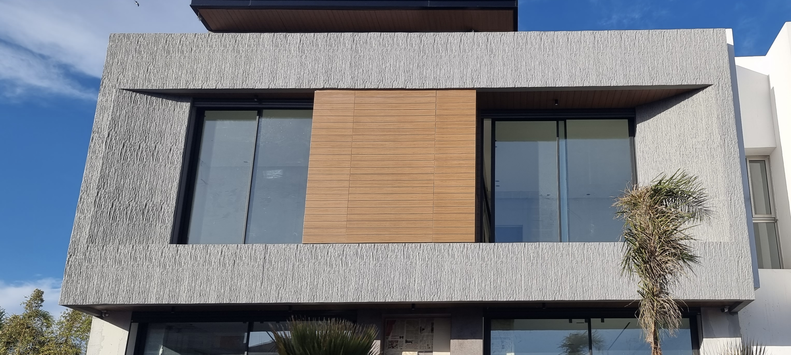

Faites du mur de votre téléviseur la pièce maîtresse du salon. Relief, effet pierre, béton ou bois — un habillage mural télé qui transforme toute la pièce.
Un mur TV décoratif change tout : au lieu d'un écran posé sur une cloison nue, vous obtenez une vraie pièce maîtresse qui structure le salon et capte le regard, télé allumée ou éteinte. C'est le projet déco le plus partagé — celui qu'on remarque dès qu'on entre dans la pièce.
Chez Deutschconfort, ce mur se construit avec Le Celestone, notre habillage mural décoratif à relief. Effet pierre, béton ou bois, lignes verticales ou panneaux 3D : la matière donne de la profondeur et de la texture, sans la lourdeur d'un parement maçonné. Léger malgré sa haute densité, il se pose proprement, même en grande hauteur derrière l'écran.
Le tout livré en primaire prêt à peindre, dans la teinte exacte de votre salon, et posé par nos équipes pour une finition sans joints visibles.
Texture et profondeur attirent la lumière et créent un point focal naturel autour de l'écran. Le salon gagne instantanément en caractère et en mise en scène.
Habillage effet pierre brute, béton ciré contemporain ou bois chaleureux : vous choisissez l'ambiance, du loft urbain au séjour cosy.
Le relief du panneau se prête à un éclairage indirect intégré au-dessus ou sur les côtés, pour révéler la texture le soir et habiller la zone télé.
Le Celestone reste léger malgré sa densité : l'habillage du mur télé, souvent haut et large, se monte simplement, sans surcharge sur la cloison.
Livré en primaire prêt à peindre, le panneau s'accorde à la teinte exacte de votre déco : ton sur ton avec le canapé ou contraste affirmé.
Mastic acrylique entre panneaux et sur têtes de vis : le mur TV décoratif forme une surface nette, continue, sans rupture visible.
Un mur TV pierre qui apporte du relief brut et une présence minérale forte. L'option la plus spectaculaire pour un salon.
Découvrir l'effet pierreUn mur TV bois, chaleureux et graphique, qui réchauffe la zone télé et s'accorde aux ambiances naturelles.
Découvrir l'effet boisLe Polymère Celestone™ qui rend tout cela possible : relief, légèreté et résistance dans une seule matière décorative.
La matière en détailUn mur TV décoratif réussi tient à deux choses : une matière exclusive et une pose maîtrisée. Depuis 1999, nous réunissons les deux pour plus de 4 800 clients.
Un Polymère Celestone™ à cœur massif haute densité : relief net, résistance aux chocs et indéformable dans le temps. Le rendu d'un parement, sans sa lourdeur.
Calepinage derrière l'écran, découpes autour des passages de câbles, alignement à la règle et joints repris au mastic : un mur télé impeccable.
Plus de 4 800 clients accompagnés : nos équipes savent transformer un mur de salon en véritable point fort de la pièce.
Choix de l'effet en showroom, matière, pose et finition prête à peindre : un seul interlocuteur de la sélection au mur terminé.
Effet pierre, béton ou bois, avec du relief et même des panneaux 3D selon le rendu recherché. Vous pouvez créer un mur TV pierre spectaculaire, un fond béton contemporain ou un mur télé bois chaleureux, puis l'ajuster à la teinte de votre salon grâce à la finition prête à peindre.
Le relief du Celestone se prête bien à un éclairage indirect placé au-dessus ou sur les côtés du panneau, pour révéler la texture le soir et habiller la zone autour de l'écran. L'intégration des bandeaux lumineux et des câbles se prévoit lors du calepinage avec nos équipes.
L'habillage mural télé en Celestone est décoratif : le support de l'écran se fixe dans le mur porteur, et le panneau vient l'habiller autour. Nos poseurs prévoient les découpes et les réservations nécessaires pour un montage propre, câbles dissimulés.
Oui. Le panneau mur TV s'utilise aussi bien en pleine hauteur derrière l'écran qu'en bandeau au-dessus d'un meuble bas. Léger malgré sa densité, Le Celestone se pose proprement, même sur de grandes surfaces verticales.
Décrivez-nous votre salon (dimensions du mur, effet souhaité, éclairage) par WhatsApp au +212 614 474 221, ou passez à notre showroom de Casablanca pour toucher la matière. Côté installation, tout est détaillé sur notre page pose & installation.
Dites-nous l'effet rêvé — pierre, béton ou bois — et les dimensions de votre mur. Nous concevons et posons la pièce maîtresse de votre salon.